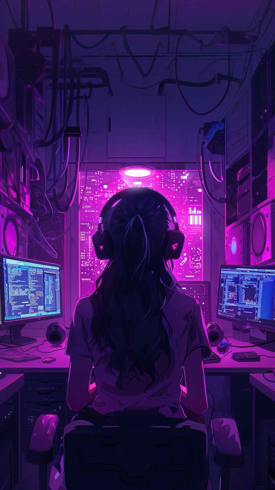

- Background
- My journey in design began at a young age. With a passion for creativity and technology, I embraced graphic design and delved into the world of architecture during my brief time studying landscape architecture design. This diverse background fuels my artistic vision.
- Design Philosophy
- As a creative designer, I believe in the power of storytelling through design.
Each project is an opportunity to create a unique visual narrative that aligns with the brand's identity. I strive to craft experiences that resonate with users,
turning webpages into living characters that engage and captivate.